{kind=link}
The outside joint is shown in the next series of photos...
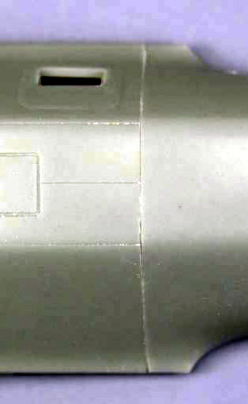
 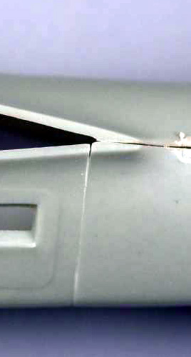
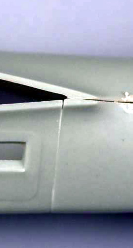
Fixing the Hobbycraft Do-17 Banana fuselage
Images and text Copyright © 2006 by Gary Buchanan
The Problem
The Do 17 to me is a very attractive airplane, it was built at a time when looks were as important as function and ease of manufacturing was forfeited to provide nicely blended lines. The fuselage has a lot of complex curves and shapes and that in and of itself makes it difficult to get a handle on exactly what was causing the banana look. Hobbycraft’s choice to split the fuselage horizontally also makes it more difficult and in the end I believe is what caused the problem in the first place. In searching for information on this interesting plane I ran across a soft cover book published by Kangaro that had several 1/72 scale drawings of the E and M versions. Are these drawings accurate? Without a set of original Dornier drawings, I can't say but they certainly look like they could be when compared to photos. I scanned the E side view drawing and enlarged it to 1/48 scale. This helped but not being able to just lay a fuselage half on top of the drawing still didn't make it all that easy. Since I had several of the Hobbycraft kits available in my stash, I decided to sacrifice one for the sake of science.
I glued the fuselage together and after making some measurements to ensure that I didn’t alter things during the process, I scribed and cut the fuselage in half vertically. This actually turned out to be easier than I anticipated and with a suitable spacer to fill in the material removed by the saw blade, should be completely usable. I fact, I believe that it will actually easier to do the interior detailing split vertically. With this done I could at last lay the model on the drawing and see what gives.
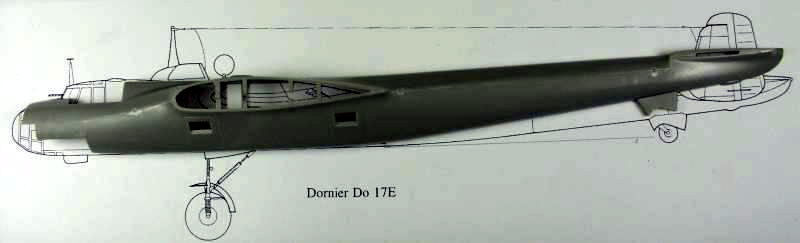
The above photo shows that result. If the fuselage is aligned for a best fit at the front end the major discrepancy is readily apparent. If a straight line is extended from the flat portion of the bottom of the forward fuselage towards the rear as shown on the above drawing, the fuselage makes an upward transition at the trailing edge of the wing / fuselage junction at a 3º angle per the drawing. The model however measures over 6º. Just to satisfy my curiosity, I placed the Airfix 1/72 scale 17 E on the 1/72 scale drawing and it was a perfect fit and from the wing rearward so was the Monogram 1/72 17 Z. Too bad Hobbycraft didn’t take a look at those when designing their kit. There are some minor problems with the forward fuselage per the drawing as shown in the photo below but these are relatively minor and after it is modified per the Squadron canopy replacement part instructions, I don’t believe they will be all that much of an issue.
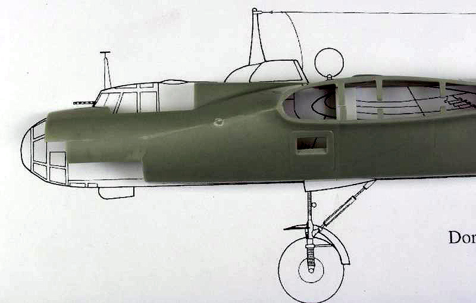
The Fix
The fix that Squadron suggests in their replacement canopy instructions is to cut a wedge out of the fuselage fore and aft of the wing then rejoin the saw cuts and fill and blend the resultant saw cuts. While this may provide the desired results it sounds like more work than I wanted to do considering I wanted to build 3 versions with this same problem. A look at the photo below shows where the bulk of the problem exists.
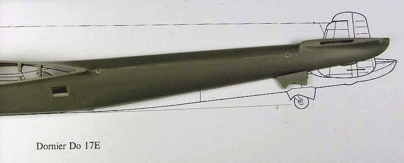
In fact the top portion of the fuselage wants to be straight and you can see this by putting the top and bottom together, holding just the ends together as seen in the photo below...
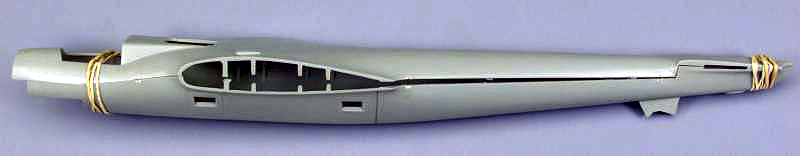
On the drawing, the point where the transition from the flat portion of the bottom of the fuselage to the taper to the tail, falls at the point where the trailing edge of the wing fillet meets the fuselage. On the model this point is slightly forward of that point but the panel line and access door is more forward than shown on the drawing as well. This is difficult to see in most photos because of the angle of the photos and I read some where that there was some variation in the placement of the doors so I'm not going to argue the point until such time as I see more proof. The panel line that is there is reasonably perpendicular to the bottom of the fuselage and seemed to me to be a good place to hide a cut line. See the photo below for comparison to the drawing; the panel line has been darkened for emphasis.
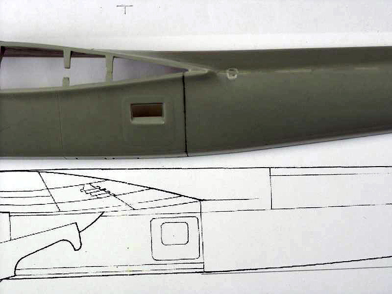
It was here that I decided to begin the surgery. Before starting I glued a piece of heavy styrene across the open side of the fuselage as I felt this would make it more ridged for the process that would follow the cutting as seen in the next photo.
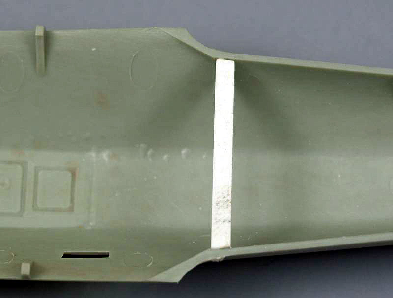
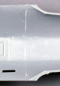
I started with a panel-scribing tool and went over the panel line repeatedly until I could begin to evidence that the tool was almost all the way through on the inside, the plastic was beginning to turn a lighter color on the inside. Click on the image at right for a larger view of the cut line.
At that point I used a razor saw to finish the cut. The deeply scribed groove provided a good guide for the blade and lessened the chance of the saw going astray. If you are confident in your cutting abilities feel free to just grab your saw and have at it. The next photo shows the fuselage after the cut…
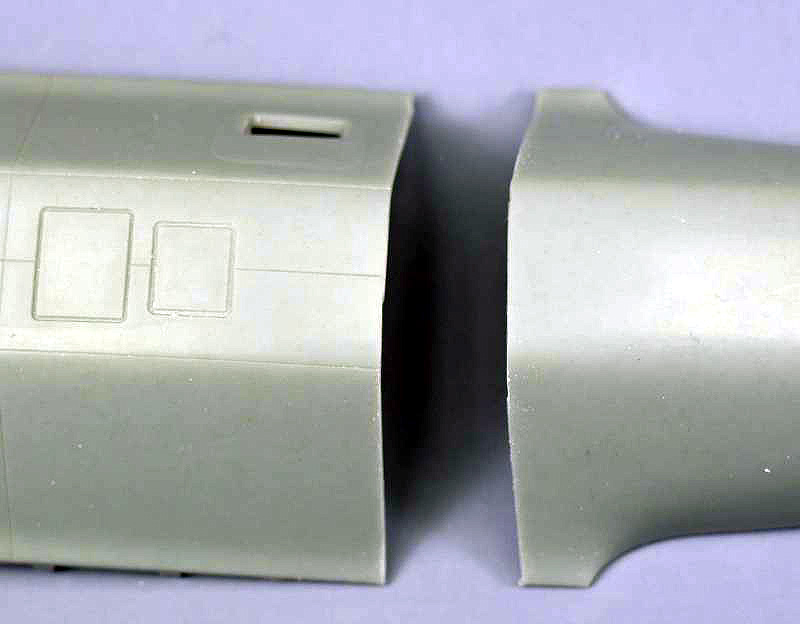
I taped a piece of 320 grit sand paper to a glass plate and ran the cut edge of the forward section over it lightly to smooth the cut and remove and burrs. Easy does it here, as you really don’t want to change the angle of this surface.
From this point on the routine will be sand, test fit and repeat. The tail wheel housing on the model is slightly larger than shown on the drawing, no doubt to compensate some for the exaggerated tail angle but this actually works in our favor for test fitting to check the tail angle. For test fitting the forward half of the fuselage should be sitting with its bottom flat against a flat surface and with the rear portion sitting on the same surface with just the forward edge and the tail wheel housing resting on the same surface. The photo at left and the one below show that relationship and gives you an idea how much material needs to be removed. Note that on the 17Z the different forward fuselage section will require that the lower step hang out over the end of the plate so only the flat portion of the fuselage is resting on the plate. Other than that the process is the same.
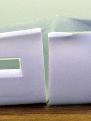 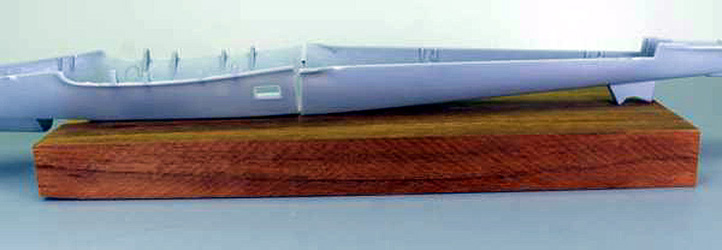
I cannot over emphasize the importance of taking it slow and easy here. Take a couple strokes across the sandpaper holding the fuselage as shown at right and check fit.
You want to remove material from the closed bottom of the fuselage tapering to the top and not the open top. If scribing a line or making a mark with a pencil or fine tip marker will help, by all means do so. You want to do this in such a manner as to keep the surfaces square to each other, if you don’t you’ll end up with the tail biased left or right. Measure the distance of the wing fillet shown in the photo below immediately after making the cut. These should remain equal and the same or close to the same length when you are finished as they were when you started.
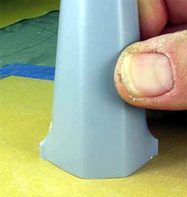 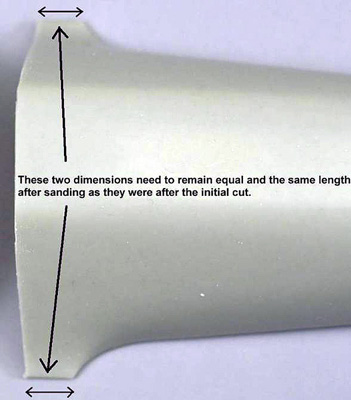
When I was satisfied I had removed enough material and everything was still square, I glued the two halves back together with Tenax and strengthened the joint with some pieces of styrene as shown in the next photo...
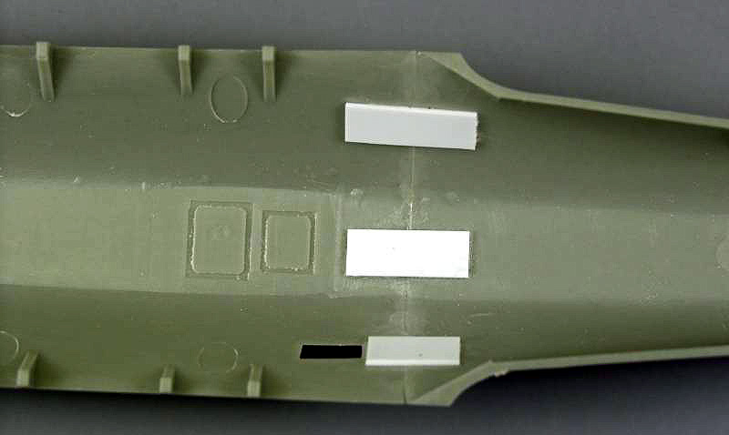
The outside joint is shown in the next series of photos...
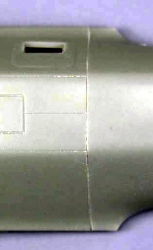
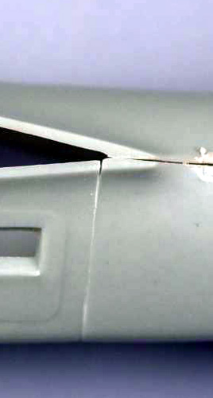
With a little filling at the ends this should end up looking pretty much like the original panel line. As can be seen, the top half fits reasonably well even though it hasn’t been cleaned up yet. There is a slight dip at the point where the panel lines meet at the bottom but I didn't feel this would be noticeable enough to try to fix, you will need to use your own judgment on that issue.
So how much did this help? You be the judge. The next series of photos pretty much tell the story. By the way, the large nuts were used to keep the front's level to the surface as they tend to be tail heavy and in the last photo the nut is keeping the fuselage from rolling over, as it wouldn’t balance on the wing root.
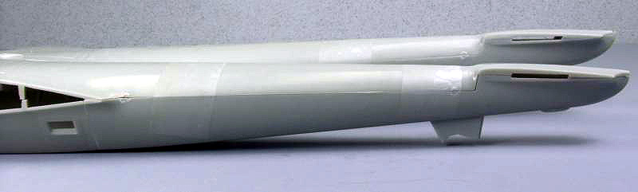
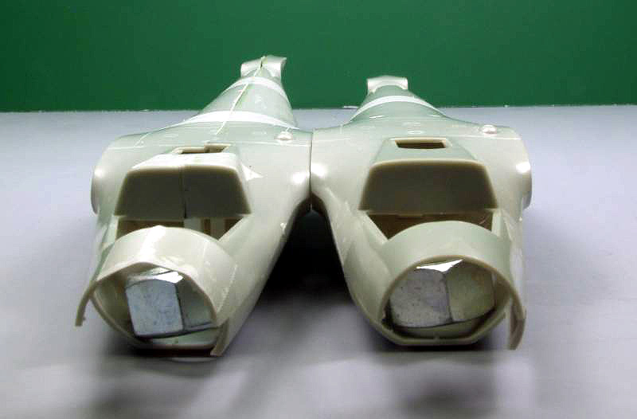
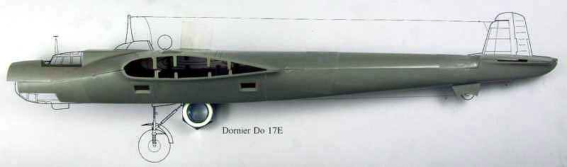
To be quite honest this all turned out much easier and better than I anticipated and it took much longer to write about and photograph than it did to do it. With this problem taken care of assembly can begin in earnest!
In case you are wondering the photos were taken using the fuselage sections of three different models, two of them were molded in a light green plastic that I used for most of the this article. As I was writing this up I realized I didn't get photos of all the steps so I had to go back and do a third using a kit that was molded in light gray plastic.